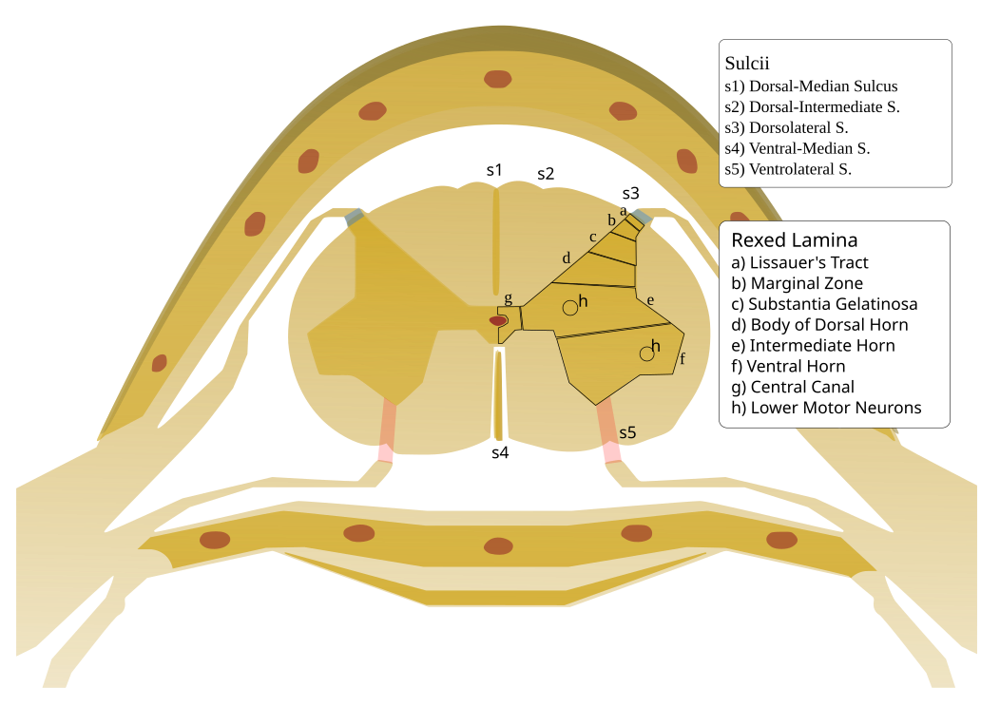

Límites aproximados con fines didácticos
POSTERIOR ↑
ANTERIOR ↓
Selecciona un área, un marcador o su botón en la leyenda. Tabulador, Enter y espacio permiten usar las mismas referencias. El resaltado muestra la extensión del área docente; las fronteras de Rexed son esquemáticas, no histología literal.
Comparar con el recurso original
ExplicitImplicity · Wikimedia Commons · CC BY-SA 3.0. Original preservado sin cambios. Esta propuesta es un diseño nuevo; no se usaron sus píxeles para generar el raster.

Cómo leer esta propuesta
Las astas son regiones; un núcleo agrupa somas; un tracto agrupa axones; las láminas de Rexed son una clasificación citoarquitectónica. La textura es artística y no muestra neuronas ni fronteras de las láminas.
Los marcadores microscópicos orientan; las posiciones exactas, los grupos motores y las proporciones no proceden de mediciones humanas. Se omiten raíces, meninges y hueso para centrar la lectura regional.